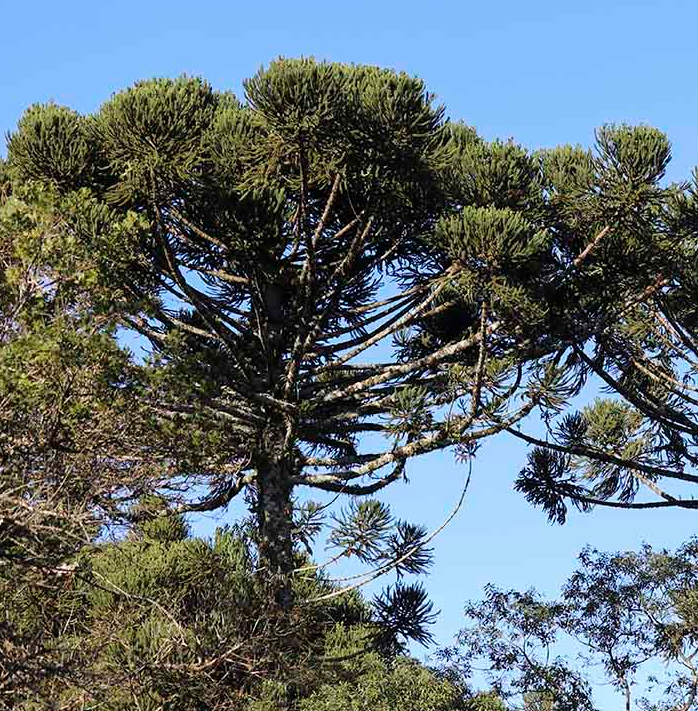
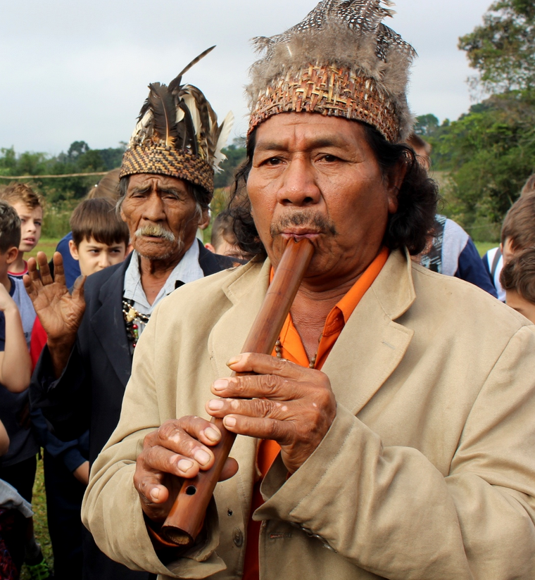
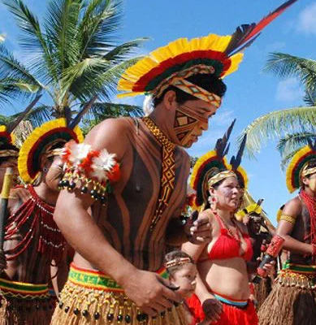

Sob a sombra da araucária.
Doe seu IR para nosso projeto na lei rouanet
Sinopse
O documentário Sob a Sombra da Araucária aborda a conexão entre a araucária e as comunidades do sul do Brasil, especialmente os Kaingang. A árvore, símbolo de resistência e fonte de sustento, é essencial para as tradições e práticas culturais dos povos indígenas. O filme explora histórias e memórias dos Kaingang, enquanto especialistas discutem a importância da preservação da araucária, uma espécie ameaçada. Com entrevistas e registros das práticas culturais, o documentário destaca a relevância ambiental e cultural da árvore para a biodiversidade e identidade regional.


Objetivo
Objetivo do Documentário: "Sob a Sombra da Araucária" convida o
espectador a uma reflexão profunda sobre a interconexão entre cultura,
natureza e identidade, destacando como a preservação do pinheiro-do-
Paraná não é apenas uma questão ambiental, mas uma defesa do
patrimônio cultural e de sobrevivência. Inspirado pelo amor e respeito que
as comunidades locais e indígenas têm pela Araucária, o documentário
aspira despertar um compromisso renovado pela conservação e
conscientização ambiental, celebrando essa árvore que, apesar de seu
vigor e resistência, se encontra em risco.
Historia
A relação entre os povos Kaingang e a Araucária é marcada por uma interdependência cultural e espiritual. Para os Kaingang, o pinheiro do Paraná é um símbolo que oferece sustento e conecta gerações, sendo essencial na alimentação, rituais e artesanato. Essa conexão ajudou a preservar tanto as práticas tradicionais quanto o ecossistema da árvore. No entanto, a exploração predatória ameaça essa relação, reforçando a necessidade de conservar a Araucária para o bem dos Kaingang e do meio ambiente.

Entre em contato com a nossa captadora e doe seu IR
Telefone: (41)99105-7418
Email: contato@danifranco.com.br


Contatọ̣: (41)99105-7418